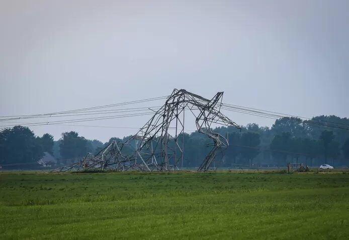
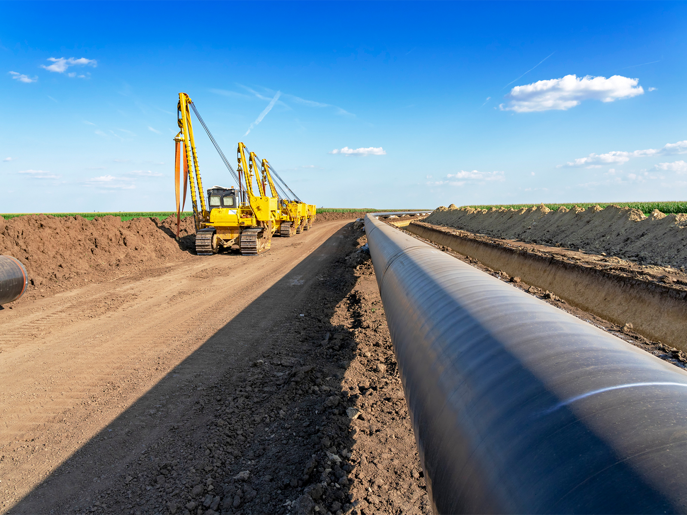

Thijs van der Klein
Video 1
Simulatie van schade van een aardbeving in verstedelijkt gebied
Infrastructuur
De infrastructuur van een stad is uitermate gevoelig voor trillingen en verplaatsing. Dit doordat de meeste kabels strak getrokken in de grond liggen of juist omdat de riolering uit betonnen of stalen buizen bestaan die amper tot geen frictieruimte hebben.
Tel daar de hoge druk van de water- en gasleiding bij op en kan je bijna stellen dat we leven boven een ondergrondse tijdbom. Wachtend op het juiste moment om te springen en daarbij gehele stadsdelen te ontregelen. Stel je eens voor,
een dag geen drinkwater, een week geen stroom of een week geen verwarming, het zijn allemaal gruwelheden waar een groot gedeelte van de wereld mee te maken heeft als een aardbeving een verstedelijkt gebied treft.
Wegen en bruggen
Het wegennet in Nederland wordt door heel Nederland intensief gebruikt, om naar werk te gaan, vrienden te bezoeken, een boodschap te doen bij de lokale supermarkt of simpel weg om jezelf te verplaatsen. Maar naast de maatschappelijke noodzaak van een
goede connectie wordt het Nederlandse wegennet ook druk gebruikt door internationale partijen, de vervoersbedrijven die vanuit de haven van Rotterdam dieper het vaste land van Europa bevoorraden, naar bijvoorbeeld Duitsland. Niek gek
dat Nederland dan ook de grootste scheepshaven heeft van Europa. Het zou een verschrikking zijn als het complete wegennet ontregeld zou raken.
Nederland voert al sinds zijn vroege jaren een continue strijd tegen het water, niet apart aangezien het Nederlands oppervlak voor 19 procent uit water bestaat (cbs.nl, 2016) en Nederland een kustlijn heeft van ruim 500 kilometer (top-10-lijstjes.nl, 2015). Ondanks dat Nederland al meerdere eeuwen zijn kustgrens heeft
weten te houden, sloeg door een zeldzame samenstelling van weersomstandigheden in 1953, de dijken waren doorgebroken. Op meer dan 150 plaatsen stroomden het zee water het Nederlandse vaste land in, hier vond de zwaarste natuurramp,
in Nederland, van de 20ste eeuw plaats. Direct en indirect stierven er 1836 mensen, stierven er meer dan 180 duizend dieren en waren grote delen van de infrastructuur beschadigt. De totale schade bedroeg 5.4 miljard euro en Nederland
was zeker driekwart jaar bezig om alle dijken weer te dichten en te herstellen. Sindsdien heeft Nederland de deltawerken, zij beschermen ons tegen het water van buitenaf. Maar voor aardbevingen kennen we amper maatregelen. Dit terwijl
de gevolgen toch zeker even catastrofaal kunnen zijn.
Afbeelding 1
De delta werken
De gevolgen liggen vooral op de fundering van de infrastructuur, door aardverschuivingen komen wegdelen te ‘zweven’. De grond onder deze wegen is dan weggeslagen of simpel weg weggeschoven. Hierdoor ontstaan zinkholen, waarna de weg daarin weg kan zakken.
Je krijgt hierdoor scheuringen in de weg, die, als ze voor jou auto gebeuren tot nare gevolgen kunnen lijden.
Verder kunnen gehele wegen met ondergrond en al wegspoelen, een gapend gat achterlatend. Waardoor sommige weken tot weken afgesloten zijn voor doorgaand verkeer. Daarnaast kunnen er in bergachtig gebied door aardbevingen aardverschuivingen plaats vinden
waardoor infrastructuur bedolven wordt onder aarde of in sneeuwachtige gebieden een combinatie van ijs en sneeuw.
Maar ook de bovengrondse infrastructuur heeft kans op schade. Namelijk als door een aardbeving de brug een tiental centimeter opschuift, mist het zijn essentiële support van de brughouders. Waardoor gedeelte van het brugdek kunnen afbreken. Of de pijlers
van een brug breken door de aanhoudende trillingen, en hiermee het gehele brugdek gelijkvloers maken met de onder doorgaande weg. De gevolgen als een volgeladen vrachtwagen in een keer 4 meter naar beneden valt op een even zo drukke
weg zijn ondenkbaar. Een mogelijke oplossing voor dit probleem is een wegdek die niet vast gemaakt zit op de pijlers, maar leunt op de pijlers. Het ligt dan als het ware op de pijlers en heeft de mogelijkheid om tot maximaal een halve
meter naar rechts en links te kunnen bewegen, hiermee ontstaat er minimale schade aan de pijlers en het wegdek omdat beide onafhankelijk van elkaar kunnen bewegen. Hierdoor hebben de trillingen amper impact op het wegdek.
Afbeelding 2
De risico's voor bruggen tijdens aardbevingen
Daarnaast is er ook nog de mogelijk tot het plaatsen van het brugvlak op dempers. Deze dempers nemen dan de trillingen op die via de grond worden doorgegeven aan de pijlers. Hierdoor blijft het brugdeel relatief stil liggen. Ook vermindert dit de kans
op fatale scheuringen en mogelijke instortingen.
Elektriciteitsnetwerk
Sinds het vrijgeven van de Nederlandse energiemarkt in 2004, zijn de energiebedrijven gesplist in twee soorten, de leveranciers en de netbeheerders. De leveranciers kopen energie in bij de energieproducenten en verkopen deze door aan de klanten, ofwel
de verbruikers. Enkele leveranciers van energie produceren zelf ook energie, voorbeelden hiervan is bijvoorbeeld Vattenfall. De netbeheerders daarentegen kopen geen energie in en produceren zelf ook geen energie, zij zorgen ervoor
dat de elektriciteit van het onderverdeelpunt via het ondergrondse laagspanningsnet naar de huizen wordt gebracht (vattenfall.nl, sd).
Het elektriciteitsnetwerk bestaat uit verschillende componenten, onderhouden en beheert door de bovengenoemde groepen. In de versimpelde versie: Het begint bij de energiecentrale, hier wordt de energie gemaakt, het gaat via de energiecentrale, onder hoogspanning,
over naar een verdeelstation. In dit verdeelstation wordt de stroom verdeeld over diverse onderverdeelstations. In deze stations is de hoogspanning dusdanig afgebouwd, dat via de stations de grote bedrijven en ondernemingen worden
verzien van energie. Uiteindelijk gaat het elektriciteit via ondergrondse kabels naar transformatorstations, de kabels die uit dit station vertrekken gaan direct naar de huizen. De spanning is dan dusdanig afgeschakeld dat er een veilige
spanning is achter jou stopcontacten.

Afbeelding 3
De kwetsbaarheid van het elektriciteitsnet
Er zijn dus veel kwetsbare componenten die er samen voor zorgen dat Nederland wordt voorzien van elektriciteit. Een redelijk recent voorbeeld, waardoor duidelijk werd hoe belangrijk een goede aansluiting is, was afgelopen september. Door een kortsluiting
en de daaropvolgende brand in een hoogspanningsstation in Lelystad, kwamen ruim 300 duizend stroomaansluitingen zonder spanning te zetten. En ontstond er grote schade aan de hoogspanningskabels, omdat ze door oververhitting gingen
doorhangen. De hierdoor ontstaande schade was ook merkbaar op andere infrastructuur, zoals het spoor. ProRail kwam diezelfde dag nog met een statement dat door de ontstane schade er tot het weekend erna geen trainen meer zouden rijden
in de regio Lelystad. Maar ook stonden attracties stil, bij Walibi, konden de sluizen niet meer bediend worden, stonden mensen vast in de lift en ontstond er een kettingreactie, ook in andere regio’s ontstonden er storingen in het
elektriciteitsnet (nos.nl, 2022).
Dat het elektriciteitsnet dus kwetsbaar is, is duidelijk. In een geval van een aardbeving is er kans dat de bovengrondse leidingen naar beneden komen, doordat door trillingen de torens ineenstorten. De aansluitingen tussen huizen en verdeelcentrums kunnen
loskomen of afbreken. De aansluiting vanuit de elektriciteitscentrale kan uitvallen. Door eventuele grondverschuivingen kunnen gehele kabels breken. Daarnaast bestaat het gevaar op een kettingreactie, zoals gebeurde afgelopen september.
Waar er in één centrale iets kapot gaat en hierdoor het gehele netwerk onder spanning komt te staan.
Ondergrondse leidingen, vervoer en doorgangen
Doordat Nederland relatief vlak is, is het gemakkelijk om door geheel Nederland kabels en leidingwerk aan te leggen. De meeste leidingen en kabels liggen onder de grond, denk hierbij aan de televisiekabels, glasvezel, gas en elektra, maar ook de riolering,
telecomkabels en tenslotte de hoogspanningskabels. Maar natuurlijk ook de tientallen tunnels onder rivieren en kanalen door, de tunnels voor vervoer, denk hierbij aan de treintunnel bij Schiphol, de noord-zuidlijn of de ondergrondse
aansluiting van de metro op het centraal station.
Waterleidingen
Water, we drinken en verbruiken er dagelijks meerdere liters van, en het mooie is: Het stroomt zo uit de muur. We hoeven geen kilometers te lopen naar een rivier of naar de dichtstbijzijnde waterput. Normaliter een paar stappen en je hebt een ‘oneindige’ hoeveelheid aan water. Een groot deel van ons lichaam heeft water nodig om te functioneren, zonder dat we het weten hebben we dus groot belang bij dat er water uit de muur blijft komen. Want, we willen echt elke keer als we dorst hebben, naar de dichtstbijzijnde supermarkt moeten lopen om een plastic fles met water te kopen.
Water, we drinken en verbruiken er dagelijks meerdere liters van, en het mooie is: Het stroomt zo uit de muur. We hoeven geen kilometers te lopen naar een rivier of naar de dichtstbijzijnde waterput. Normaliter een paar stappen en je hebt een ‘oneindige’ hoeveelheid aan water. Een groot deel van ons lichaam heeft water nodig om te functioneren, zonder dat we het weten hebben we dus groot belang bij dat er water uit de muur blijft komen. Want, we willen echt elke keer als we dorst hebben, naar de dichtstbijzijnde supermarkt moeten lopen om een plastic fles met water te kopen.
Afbeelding 4
Het waternet in Nederland
Achter de zogenoemde muur van oneindige water, zit een heus netwerk aan pompen, reinigingsinstallaties, pijpleidingen en vooral opslagpunten voor schoon drinkwater. Ons waternet functioneert alleen met de nodige toevoer aan elektriciteit. Ofwel als de
elektriciteit door, bijvoorbeeld het toedoen van een aardbeving, uitvalt en de noodstroom van de verschillende waterschappen, verantwoordelijk voor dammen, dijken en sluizen, en de waterleidingsbedrijven, niet tijdig genoeg zijn in
het inschakelen van noodstroomgeneratoren. Vallen de pompen stil, en hiermee de waterdruk.
Doordat de vraag naar water in de afgelopen eeuw drastisch is toegenomen, zijn watertorens zelf niet meer efficiënt genoeg, er zouden teveel watertorens nodig zijn om de gewenste druk te creëren, en daarnaast zorgt het voor horizonvervuiling, want het
zijn niet de mooiste gebouwen. Tegenwoordig zijn grote elektrisch aangedreven motoren de oplossing, zij zorgen voor een constante druk van minimaal 2 bar (mooiwater.nl, null).
Dus in de geschetste situatie, van stroomuitval, zouden deze motoren stil komen te vallen, waardoor indirect de waterdruk verdwijnt, en er hiermee dus geen water meer uit de muur zou komen. Daarnaast kan door stroomuitval verschillende
zuiveringsinstallaties uit komen te vallen, en hiermee het water drastisch verslechteren in kwaliteit. Ook kunnen verschillende kleppen en sluizen minder werken en hiermee de toevoer van water in de leidingen verminderen. Maar ook
kunnen gedeelten van de waterleidingen door de trillingen openscheuren of doorbreken. Door de immense druk die op de leiding staat, ontstaan er meteen problemen.
Vroeger werd de waterdruk hoog gehouden door watertorens, hoge torens van enkele tientalen meters hoog waar bovenin een reservoir te vinden is gevuld met een grote hoeveelheid water. Dit zorgde ervoor dat in de waterleidingen altijd een constante druk
bleef. Dit is te verklaren door natuurkunde. De natuur wilt naar evenwicht, als dit evenwicht wordt verstoort, door bijvoorbeeld hoogte verschil (watertoren) zal de natuur een nieuw evenwicht willen instellen. Ofwel, het wil dat het
water even hoog komt te staan als het water in de watertoren. Daarnaast drukt er een groot gewicht op het water, en aangezien water niet in elkaar druk is, ontstaat er een waterdruk.
Gasleidingen
Sinds de vondst van gas in het Groningse Slochteren, is er tot 2013 al ruim 2 miljard kuub aardgas uit de grond gehaald. Toen in 1959 het gasveld werd gevonden, werd heel Nederland in rap tempo aangesloten op het Groningse gas, deze gasbel zorgde ervoor dat Nederland zich kon vormen tot verzorgingsstaat en dat het de naoorlogse schade kon herstellen. Deze buizen bestaan uit een legering van metaal of van kunststof. Zijn zeer robuust maar hierdoor niet flexibel, hevige bewegingen kunnen er dan ook voor zorgen er scheuren ontstaan in de gasleiding. Een nadeel ten opzichte van de waterleiding, is dat je gas niet kan zien en alleen bij een groot lek kan ruiken. Maar een beetje gas is al snel enorm explosief en goed brandbaar. De risico’s bij een eventueel gaslek zijn dus enorm.
Sinds de vondst van gas in het Groningse Slochteren, is er tot 2013 al ruim 2 miljard kuub aardgas uit de grond gehaald. Toen in 1959 het gasveld werd gevonden, werd heel Nederland in rap tempo aangesloten op het Groningse gas, deze gasbel zorgde ervoor dat Nederland zich kon vormen tot verzorgingsstaat en dat het de naoorlogse schade kon herstellen. Deze buizen bestaan uit een legering van metaal of van kunststof. Zijn zeer robuust maar hierdoor niet flexibel, hevige bewegingen kunnen er dan ook voor zorgen er scheuren ontstaan in de gasleiding. Een nadeel ten opzichte van de waterleiding, is dat je gas niet kan zien en alleen bij een groot lek kan ruiken. Maar een beetje gas is al snel enorm explosief en goed brandbaar. De risico’s bij een eventueel gaslek zijn dus enorm.

Afbeelding 5
Het gasnet in Nederland
Riolering
Niet meteen de meest essentiële, toch kunnen er onprettige situaties ontstaan als de riolering van een stad wegvalt. Het risico is relatief hetzelfde als de water- en gasleiding, maar in tegenstelling tot die twee, zijn de meeste rioleringspijpen van beton gemaakt. Dit is robuust, maar totaal niet flexibel. Ondanks dat is het moeilijk van z’n plek te krijgen en zal het dus niet bij een zwakke aardbeving meteen voor problemen zorgen. Maar de verbinding tussen de rioleringspijpen ergens breekt, trekt dat een hoop ongedierte aan, zorgt het voor een ongelofelijke stank en kan het zorgen voor vervuiling van het grondwater, als het langdurig niet wordt opgelost.
Niet meteen de meest essentiële, toch kunnen er onprettige situaties ontstaan als de riolering van een stad wegvalt. Het risico is relatief hetzelfde als de water- en gasleiding, maar in tegenstelling tot die twee, zijn de meeste rioleringspijpen van beton gemaakt. Dit is robuust, maar totaal niet flexibel. Ondanks dat is het moeilijk van z’n plek te krijgen en zal het dus niet bij een zwakke aardbeving meteen voor problemen zorgen. Maar de verbinding tussen de rioleringspijpen ergens breekt, trekt dat een hoop ongedierte aan, zorgt het voor een ongelofelijke stank en kan het zorgen voor vervuiling van het grondwater, als het langdurig niet wordt opgelost.
Metro- en tunnels
De tunnels, en ook metrotunnels, zijn grote hollen buizen, gemaakt van een combinatie van staalwerk, cement en beton. Samen vormen ze een stevige structuur, dat er voor zorgt dat grachtenpanden van Amsterdam niet verzakken in de metrotunnel, of dat we veilig onder kanaal kunnen doorrijden. Deze stevigheid is ook meteen hun zwakte, in de meeste tunnels is weinig tot geen ruimte voor frictie of flexibiliteit. Hierdoor is het niet abnormaal dat er scheuren kunnen ontstaan in de tunnels, met mogelijk gevolg dat het ineenstort. En hiermee een gedeelte van de oppervlakte met zich meenemen, in het geval van de metrotunnels.
De tunnels, en ook metrotunnels, zijn grote hollen buizen, gemaakt van een combinatie van staalwerk, cement en beton. Samen vormen ze een stevige structuur, dat er voor zorgt dat grachtenpanden van Amsterdam niet verzakken in de metrotunnel, of dat we veilig onder kanaal kunnen doorrijden. Deze stevigheid is ook meteen hun zwakte, in de meeste tunnels is weinig tot geen ruimte voor frictie of flexibiliteit. Hierdoor is het niet abnormaal dat er scheuren kunnen ontstaan in de tunnels, met mogelijk gevolg dat het ineenstort. En hiermee een gedeelte van de oppervlakte met zich meenemen, in het geval van de metrotunnels.